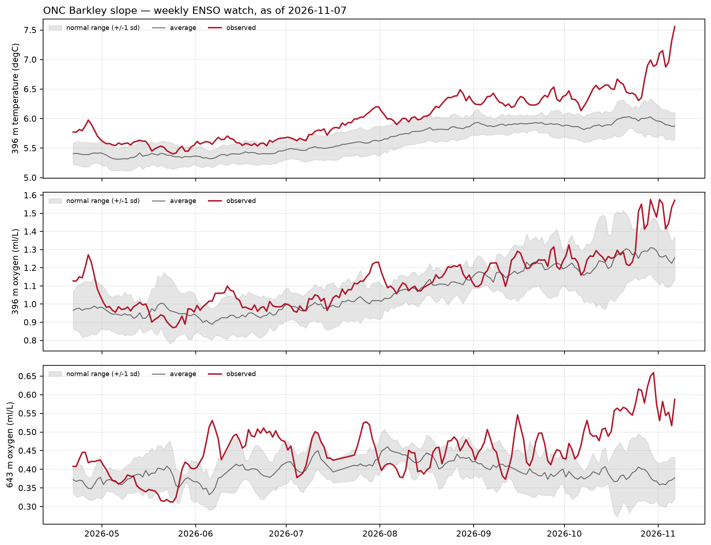
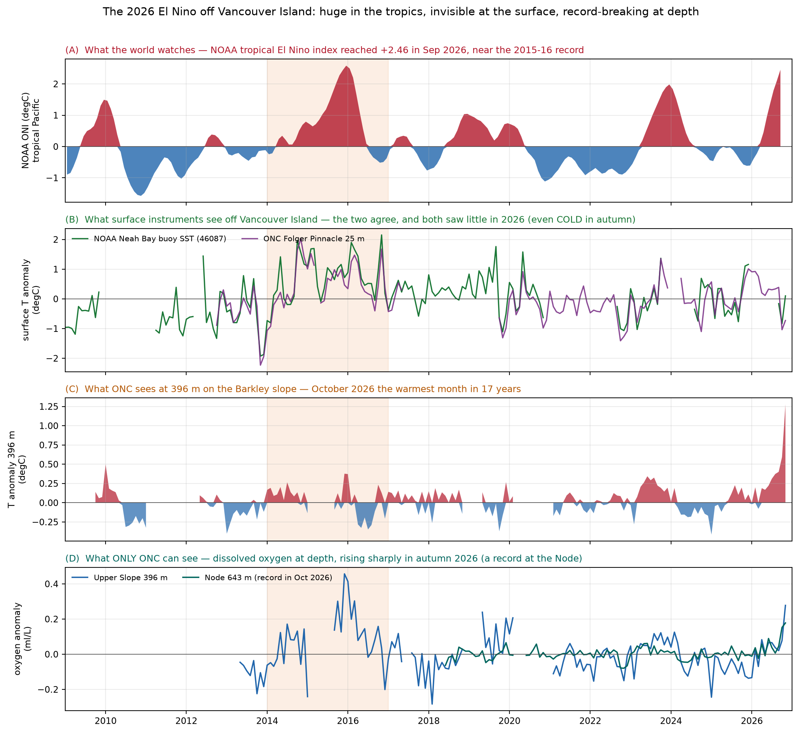

Ocean Networks Canada cabled records, southwest Vancouver Island. Status as of 2026-11-07 (data to 7 November 2026). Tropical index: ONI (ASO 2026) about +2.5; RONI +1.97.
| Site | Depth | Temperature anomaly | Oxygen anomaly |
|---|---|---|---|
| Folger Pinnacle | 25 m | -1.08 degC (-1.3 sd, cold) | -0.06 ml/L (normal) |
| Barkley Upper Slope | 396 m | +0.76 degC (+3.5 sd, rising) | +0.13 ml/L (+0.8 sd, rising) |
| Barkley Node | 643 m | +0.37 degC (+3.0 sd, rising) | +0.18 ml/L (+3.5 sd, record) |
| Barkley Canyon Axis | 985 m | +0.24 degC (+2.6 sd, rising) | -0.03 ml/L (-1.7 sd, low) |
Anomaly = latest 30-day mean minus the pre-2026 harmonic climatology; "sd" = pre-2026 residual spread. Lead with temperature (passed swap-test QC); 396 m salinity may carry sensor drift; Folger Deep 96 m offline since 2026-07-18.

Red = observed; grey band = normal range (mean +/- 1 sd for the date). 396 m temperature is now well above the band and still rising; oxygen at 396 m and 643 m is at or above the top of the band.

One timeline: the tropical El Nino is huge (A); the surface off Vancouver Island saw little, even cold, in autumn (B - a NOAA buoy and ONC 25 m agree, r = 0.91); 396 m had its warmest month in 17 years (C); oxygen at depth is rising (D). Invisible at the surface, record-breaking at depth.
Steve Mihaly's ONC slope & canyon monitor tracks the records as they break, across more depths (to 2658 m). This page adds the why: the coastally trapped-wave mechanism, independent coastal sea-level evidence, the heave-versus-deoxygenation split on density surfaces, the 2023 repeatability case, and a forecast for 2027.